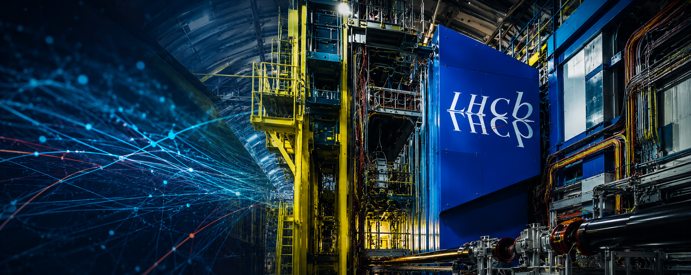

Why the LHCb Upgrade Cuts Matter
UKRI and STFC have cut funding for the next-generation LHCb upgrade at CERN. What is at stake for UK science, international credibility, skills, detector expertise and the future of particle physics?
A collection of articles and commentary on particle physics, UK science policy, research funding and related issues. New pieces will be added here as they are published.

UKRI and STFC have cut funding for the next-generation LHCb upgrade at CERN. What is at stake for UK science, international credibility, skills, detector expertise and the future of particle physics?

A closer look at the 2026 STFC prioritisation outcome, the baseline behind UKRI's 2.7% PPAN headline, and what inflation-adjusted comparisons say about the contraction in research capacity.
Inside a pivotal week for UK particle physics, astronomy and nuclear science, as ministers, Parliament, UKRI and STFC confronted the growing PPAN funding crisis.
A practical template and guidance for contacting your local MP about the current PPAN funding crisis, including points that can be adapted to your own situation.
Articles are presented newest-first. Resources without a clear publication date are listed separately in the same feed.